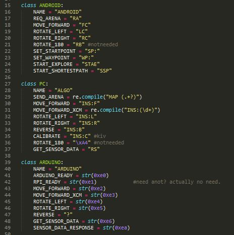

The above is the data structure for the Raspberry Pi to identify the sender and the recipient associated with the message.
From define2.py, these are the string constants agreed upon with each component respectively that the generateLetter() function will check for.
The above is an abstract from the Bluetooth class which was implemented similarly in other classes. When the Bluetooth class receives data, it will generate a letter to address to the correct recipient based on the context of the data. Then, the letter will be put into the queue.
In the event that the connection breaks, the function receiveData() was implemented to continuously listen for the next connection, thus ensuring availability.
Whenever there is a letter in the queue, the allocate function will read the recipient and send to the message to it. When sending to Arduino, there is a need to do some translation to integer bytes string.
In summary, there are a total of 5 threads:
| 3 threads for each receiving + 1 allocate thread for general sending + 1 special thread for arduino sending |
There are 2 queues in this program:
| 1) queue - all receiving threads will put data into queue - allocate will get data from queue and send the data to their recipient. - if recipient is arduino, send data into another queue_usb. 2) queue_usb - arduino sending thread will take from this queue_usb. |
[insert thread diagram here.]
The above a diagram to represent the interactions of the threads.
While Arduino is executing their own procedures, Arduino is unable to receive any commands from Rpi. Hence, we need wait for Arduino to be ready before sending an instruction.
To avoid this communication from blocking the main sending thread, we delegate the sending to arduino as a separate thread with its own queue.
The moment the serial communication replied with a READY bytes, we will trigger sending by setting readytosend as True.

The readytosend property will be used to escape the busy waiting loop.